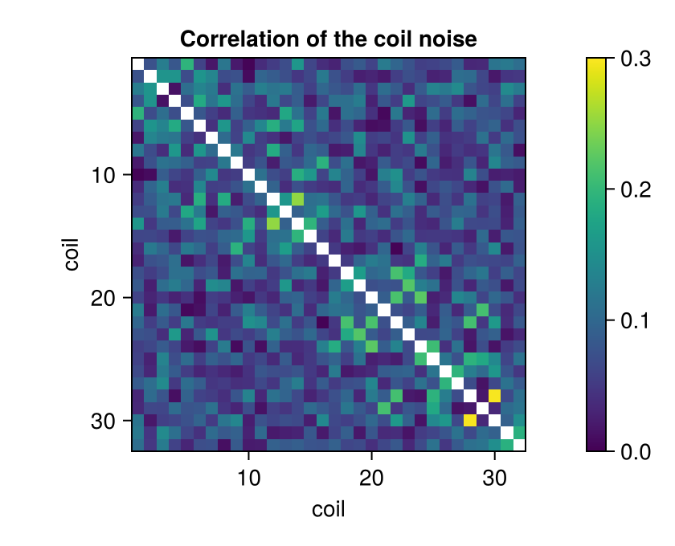
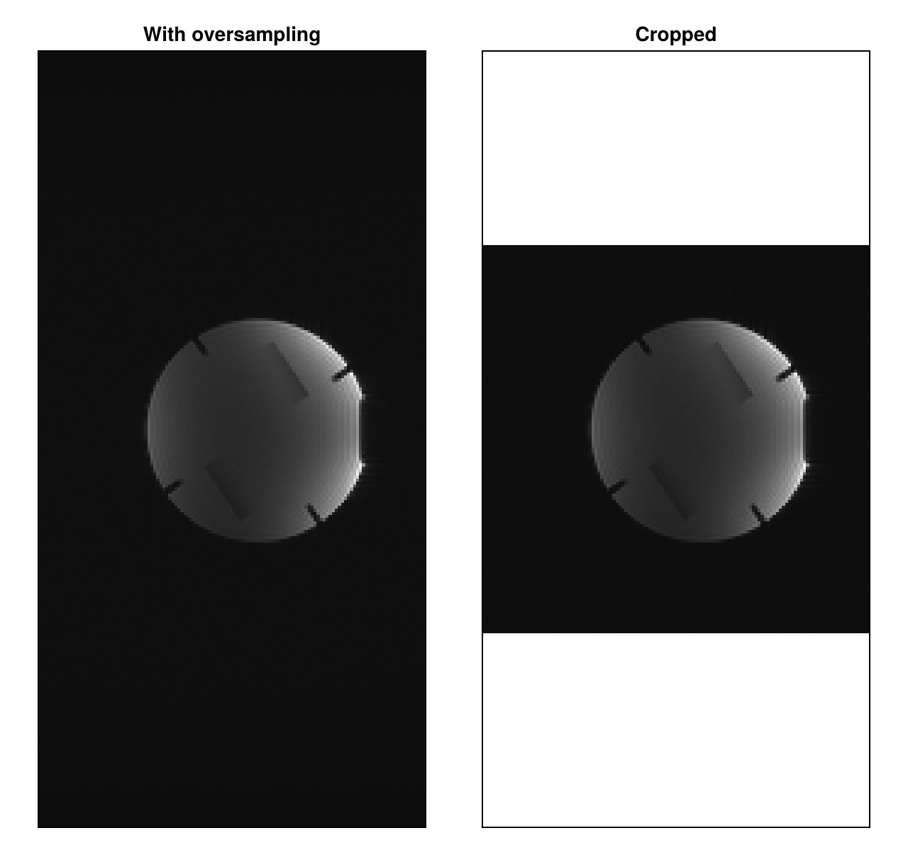

Select and Prepare Profiles
Raw data from a scanner often contains readouts that are not part of the image, such as noise measurements, and readouts that are oversampled, that is, sampled densely enough for a larger field of view than the image needs. This guide shows how to find the special readouts through their flags and counters and separate them, and how to remove the readout oversampling before the conversion to AcquisitionData. Data Model explains the two data types.
The data is the first repetition of simple_gre.h5, the gradient-echo example dataset of the ISMRMRD project, a phantom measured with 32 coils on a 1.5 T scanner. It belongs to the documentation data, which is downloaded as in Direct Reconstruction. Besides MRIReco, the guide needs MRIFiles to read the file and CairoMakie for the plots.
using MRIReco, MRIFiles, CairoMakie, LinearAlgebra
using Pkg.Artifacts
artifacts = joinpath(pkgdir(MRIReco), "docs", "Artifacts.toml")
datadir = ensure_artifact_installed("MRIRecoDocsData", artifacts; io = devnull)
rawData = RawAcquisitionData(ISMRMRDFile(joinpath(datadir, "simple_gre_rep0.h5")))
length(rawData.profiles)129Looking at Flags and Counters
The header of each profile holds flags, which describe the readout, for example as a noise measurement or as the first readout of a slice, and counters, which place it in the acquisition. flags_of lists the flags that are set. For the first two profiles of the file:
flags_of(rawData.profiles[1]), flags_of(rawData.profiles[2])(["ACQ_IS_NOISE_MEASUREMENT"], ["ACQ_FIRST_IN_SLICE"])The first profile is a noise measurement, and the second one is the first k-space line of the image. Both have the same counters, for example the phase encoding step and the repetition, but the noise was sampled with a different dwell time in µs:
h1, h2 = rawData.profiles[1].head, rawData.profiles[2].head
(Int(h1.idx.kspace_encode_step_1), Int(h1.idx.repetition), h1.sample_time_us),
(Int(h2.idx.kspace_encode_step_1), Int(h2.idx.repetition), h2.sample_time_us)((0, 0, 30.0f0), (0, 0, 7.8f0))The flags have the names of the ISMRMRD format without its prefix ISMRMRD_, and FLAGS holds all names that MRIBase knows. flag_is_set checks one of them, for example to count the noise measurements:
count(p -> flag_is_set(p, "ACQ_IS_NOISE_MEASUREMENT"), rawData.profiles)1When a converter did not mark a special readout or marked it wrongly, flag_set! and flag_remove! change the flags of a profile. The flags are also exported as UInt64 bit masks with the same names, for example ACQ_IS_NOISE_MEASUREMENT, for working with head.flags directly.
Separating the Noise Measurement
filter_raw_by_flags keeps the profiles that have a flag, here the one noise readout. Stacking the samples of all noise readouts gives the noise data, a matrix of samples × coils:
noise = filter_raw_by_flags(rawData, "ACQ_IS_NOISE_MEASUREMENT")
noiseData = reduce(vcat, [p.data for p in noise.profiles])
size(noiseData)(256, 32)With a list of flags, filter_raw_by_flags keeps the profiles that have all of them. Profiles with any of the flags in a list flags can be selected with filter(p -> any(f -> flag_is_set(p, f), flags), rawData.profiles) and put into RawAcquisitionData(rawData.params, profiles).
The noise of different coils can be correlated. covariance estimates the covariance matrix from the samples, and the magnitudes of the correlation coefficients between different coils show how strongly. Here, some pairs of coils reach 0.2 to 0.3; with only 256 samples, the smaller values are largely estimation noise:
C = covariance(noiseData)
s = sqrt.(real.(diag(C)))
R = abs.(C) ./ (s * s')
R[diagind(R)] .= NaN
fig = Figure(size = (420, 340))
ax = Axis(fig[1, 1]; aspect = DataAspect(), yreversed = true,
xlabel = "coil", ylabel = "coil", title = "Correlation of the coil noise")
hm = heatmap!(ax, R; colorrange = (0, 0.3), nan_color = :white)
Colorbar(fig[1, 2], hm)
fig
The longer dwell time of the noise readout lowers its noise variance per sample compared with the image data, but does not change the correlation between the coils. The reconstruction types "multiCoil" and "multiCoilMultiEcho" use these samples to decorrelate the coils when they are passed as params[:noiseData], see Noise Decorrelation.
Removing Profiles That Are Not Image Data
The conversion to AcquisitionData does not skip special readouts. It keeps the first readout of each phase encoding step, which here is the noise instead of the first k-space line of the image. The noise is also placed by its center sample, 0 instead of 128, so it fills half of each of the first two k-space lines:
n = size(noiseData, 1)
AcquisitionData(rawData).kdata[1][1:n, :] == noiseDatatrueremove_raw_by_flags removes the profiles that have any of the given flags. By default, these are noise measurements, parallel calibration, navigator, phase correction and phase stabilization readouts, and dummy scans:
rawImage = remove_raw_by_flags(rawData)
length(rawImage.profiles)128Profiles without any of these flags are kept, for example readouts marked only as ACQ_IS_HPFEEDBACK_DATA. A list of flags passed as second argument replaces the default list.
The readouts marked ACQ_IS_PARALLEL_CALIBRATION hold calibration data for parallel imaging, for example to estimate coil sensitivities, and are removed by default. Readouts that are calibration and image data at once carry ACQ_IS_PARALLEL_CALIBRATION_AND_IMAGING instead, at least from the converter siemens_to_ismrmrd, and are kept. To get all calibration readouts, select the profiles with either flag before the removal, as shown above, see #237.
Removing the Readout Oversampling
The header gives a field of view of 600 mm in the readout direction for the encoding, twice the 300 mm of the image:
rawImage.params["encodedFOV"], rawImage.params["reconFOV"]([600.0, 300.0, 5.0], [300.0, 300.0, 5.0])remove_oversampling transforms each readout into image space, keeps the central part that covers the field of view of the image and transforms it back. This saves memory and computation time, and here it halves the number of samples:
rawCropped = remove_oversampling(rawImage)
size(rawImage.profiles[1].data, 1), size(rawCropped.profiles[1].data, 1)(256, 128)It takes the number of samples from the first profile and applies the same window to all profiles, so profiles of another length have to be removed before. Header values that are not a multiple of the ratio, for example an odd center_sample with an oversampling factor of 2, make it fail, see #381. Oversampling in the phase encoding directions, which this data does not have, stays and has to be cropped from the reconstructed image.
remove_oversampling adapts encodedSize but not encodedFOV, which AcquisitionData uses as the field of view and from which the reconstruction computes the pixel spacing. Set its readout entry to the field of view of the image (see #239):
rawCropped.params["encodedFOV"][1] = rawCropped.params["reconFOV"][1]Converting and Reconstructing
Both versions can now be converted and reconstructed. The direct reconstruction gives one image per coil, which we combine by the root sum of squares:
acqData = AcquisitionData(rawImage)
acqDataCropped = AcquisitionData(rawCropped)
rss(img) = sqrt.(sum(abs2, img[:, :, 1, 1, :, 1]; dims = 3)[:, :, 1])
paramsFull = Dict{Symbol, Any}(:reco => "direct", :reconSize => (256, 128))
paramsCropped = Dict{Symbol, Any}(:reco => "direct", :reconSize => (128, 128))
imageFull = rss(reconstruction(acqData, paramsFull))
imageCropped = rss(reconstruction(acqDataCropped, paramsCropped))
acqData.fov, acqDataCropped.fov((600.0, 300.0, 5.0), (300.0, 300.0, 5.0))The readout direction is vertical in the figure, and both images are drawn with the same pixel size. With oversampling, the image covers twice the field of view in this direction, and the cropped image is its central half:
fig = Figure(size = (640, 600))
axFull = Axis(fig[1, 1]; aspect = DataAspect(), yreversed = true,
title = "With oversampling")
heatmap!(axFull, imageFull'; colormap = :grays)
canvas = fill(NaN, 256, 128)
canvas[65:192, :] = imageCropped
axCropped = Axis(fig[1, 2]; aspect = DataAspect(), yreversed = true, title = "Cropped")
heatmap!(axCropped, canvas'; colormap = :grays)
hidedecorations!.((axFull, axCropped))
fig
Selecting Profiles When Reading
When MRIFiles reads an ISMRMRD file, it can also select profiles by their counters: the keywords slice, repetition and contrast of RawAcquisitionData(::ISMRMRDFile) keep the profiles whose counters have the given value or one of the given values, counted from 0. The file here was made in this way, with repetition = 0, from simple_gre.h5, which holds ten repetitions. Data without the first slice or repetition is not converted correctly yet, see #382.
This page was generated using Literate.jl.